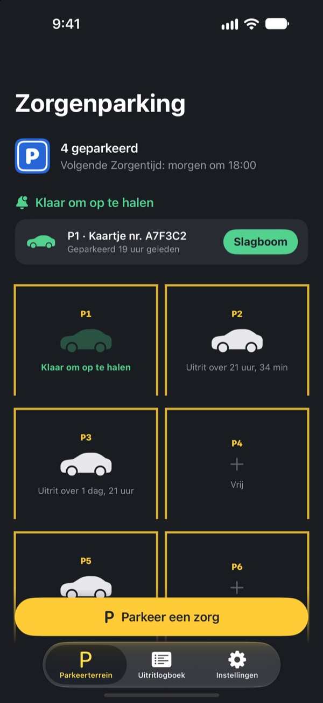
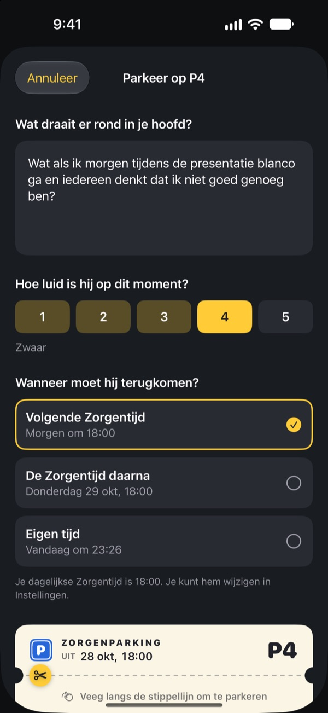
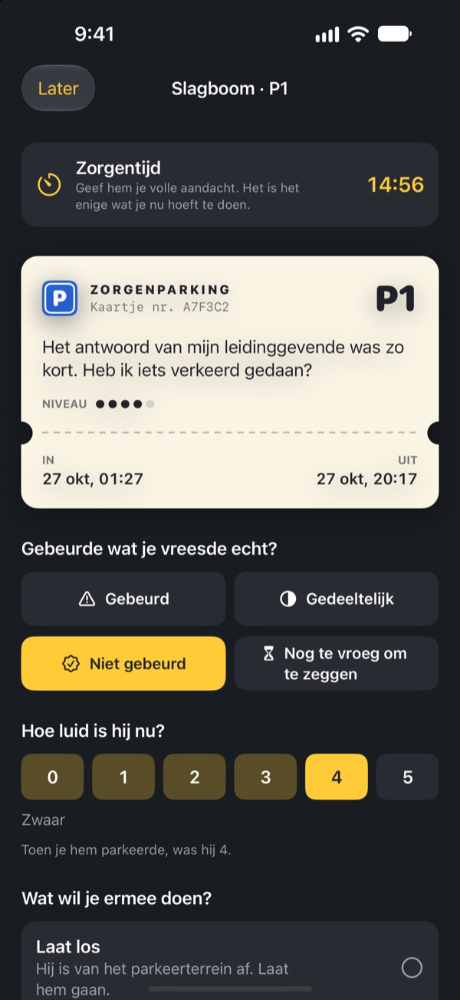
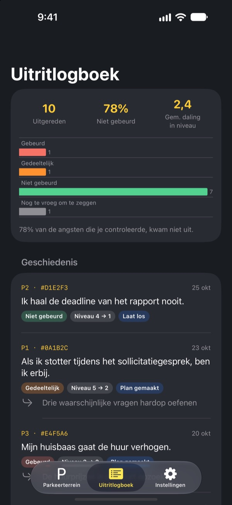

Parkeer je zorg.
Haal hem later op.
Schrijf op wat er bij het slapengaan door je hoofd maalt en laat het achter op een parkeerkaartje. Op je Zorgentijd krijg je het terug. Tot die tijd hoef je het niet mee te sjouwen.
Alle functies zijn gratis. Geen reclame, geen account.

Parkeer één zorg
Laat het voorbeeld staan of schrijf op wat je nu bezighoudt. Geparkeerd wordt hij wazig, en op je Zorgentijd haal je hem weer tevoorschijn.
Licht uit, hoofd aan?
Zodra je hoofd het kussen raakt, begint het: iets wat je vandaag zei, de vergadering van morgen, het bericht waar nog geen antwoord op kwam. Hoe harder je probeert er niet aan te denken, hoe luider het wordt. Zorgenparking vraagt niet dat je de zorg wegduwt. Je schrijft hem op, geeft hem een plek en zet een moment apart om ermee aan de slag te gaan.
Opgeschreven is uit je hoofd
Schrijf hem op zoals hij in je hoofd klinkt en geef aan hoe luid hij nu is, van 1 tot 5. Scheur het kaartje af en de zorg blijft wazig op de parking staan.
Rijdt hij toch weer je hoofd binnen, zeg dan: je hebt al een plek. Jouw tijd komt nog, maar niet nu.

15 minuten op je Zorgentijd
Elke dag op je Zorgentijd krijg je een herinnering. Bij de slagboom lees je de zorg opnieuw en check je of hij echt is uitgekomen en hoe luid hij nu nog is.
Daarna laat je hem los, maak je er een kleine volgende stap van of parkeer je hem tot de volgende Zorgentijd.

Zie hoe vaak je zorgen klopten
Hoe meer zorgen er zijn uitgereden, hoe duidelijker het uitritlogboek laat zien hoeveel er echt zijn uitgekomen en hoeveel ze in kracht zijn gezakt.
Zorgen schetsen de toekomst vaak somberder dan ze uitpakt. Hoe meer je bijhoudt, hoe minder je de volgende gelooft.

In drie stappen begonnen
- 1
Kies je Zorgentijd
Bij de eerste keer openen kies je wanneer je elke dag je zorgen onder ogen ziet. Later aan te passen in Instellingen.
- 2
Parkeer een echte zorg
Parkeer meteen iets wat je bezighoudt en merk hoe de kracht vóór en na verandert.
- 3
Sta ophaalherinneringen toe
Op je Zorgentijd krijg je een herinnering met alleen het plaatsnummer.
Waarom het werkt
- Alleen op een vast moment piekeren
- Mensen die hun zorgen naar een kort dagelijks moment verplaatsten, piekerden minder en meldden minder angst en slaapproblemen. (Borkovec e.a., 1983; McGowan & Behar, 2013)
- Opschrijven om los te laten
- Een concreet plan hield onafgemaakte taken uit de gedachten, en vijf minuten schrijven voor het slapen hielp mensen sneller in slaap te vallen. (Masicampo & Baumeister, 2011; Scullin e.a., 2018)
- Checken wat er echt gebeurde
- Toen mensen die chronisch piekeren hun zorgen bijhielden, kwam 91% ervan niet uit. (LaFreniere & Newman, 2020)
Zorgenparking is gebaseerd op het uitstellen van zorgen, een techniek uit de cognitieve gedragstherapie (CGT) die al tientallen jaren wordt onderzocht.
Alles is gratis
Gratis
- Onbeperkt parkeerplaatsen
- Dagelijkse herinneringen op je Zorgentijd en zelf te kiezen uitrittijden
- Slagboom en uitritlogboek
- Inzichten over uitritten: hoeveel er uitkwam en hoeveel de kracht zakte
Een fooi, als je wilt
- Heb je er iets aan, dan kun je de ontwikkelaar een kleine fooi geven
- Klein, middel of groot, wat je wilt
Een fooi ontgrendelt niets. Zonder werkt alles precies hetzelfde.
Geen reclame, geen account, geen servers, geen analysetools. Alles wat je schrijft blijft op je iPhone.
Veelgestelde vragen
Hoe verander ik mijn Zorgentijd?
In het tabblad Instellingen, bij Zorgentijd. De nieuwe tijd geldt voor zorgen die je daarna parkeert. Zorgen die al geparkeerd staan, houden hun oorspronkelijke uitrittijd.
Ik krijg geen ophaalherinneringen.
Kijk bij Meldingen in het tabblad Instellingen. Staan meldingen uit, tik dan op Open iOS-instellingen en zet ze aan. Met een focus of Niet storen aan kunnen herinneringen stil binnenkomen. Ook zonder herinnering staan zorgen waarvan de tijd om is als klaar om op te halen op de parking.
Staat mijn zorg in de melding?
Nee. Meldingen tonen alleen het plaatsnummer, zoals ‘P3 staat klaar om op te halen’. De zorg zelf zie je pas als je de app opent en naar de slagboom gaat.
Kan ik een zorg vóór Zorgentijd bekijken?
Tik op de parking op zijn auto en kies Stuur hem nu naar de slagboom. Uitstellen werkt wel het best als je wacht. De meeste zorgen voelen op Zorgentijd al kleiner.
Kan ik mijn gegevens naar een nieuwe iPhone zetten?
Alles staat alleen op je iPhone, zonder account of synchronisatie. Zet je een nieuwe iPhone terug vanaf een iCloud- of computerback-up, of gebruik je Snelle start, dan gaan je gegevens mee met die van je andere apps.
Hoe verwijder ik mijn gegevens?
Veeg in het tabblad Uitritlogboek een item naar links om het te verwijderen. Verwijder je de app, dan is alles weg.
Is dit een behandeling?
Zorgenparking is een zelfhulpmiddel gebaseerd op het uitstellen van zorgen uit de CGT. Het is geen medisch hulpmiddel en vervangt geen professionele diagnose of behandeling.
Wat als het echt niet meer gaat?
Als zorgen je dagen overnemen of je erover denkt jezelf iets aan te doen, draag het dan niet alleen. In Nederland kun je 113 Zelfmoordpreventie bellen op 113 of 0800-0113, en bij acuut gevaar 112.
Vragen of ideeën? Mail naar leeo@kakao.com.